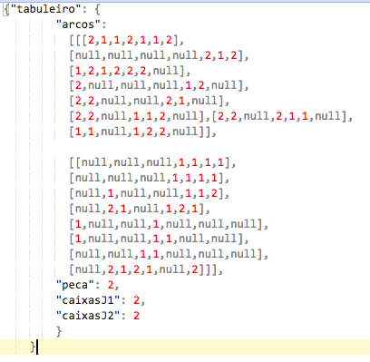

Esta é uma página HTML estática, para testar o envio, para um servidor Lisp, dos dados de uma partida do jogo constituídos. Estes dados da partida são constituídos por 1) um tabuleiro, 2) o simbolo com que irá jogar a máquina, 3) o número de caixas fechadas do jogador com as peças 1 e 4) o número de caixas fechadas do jogador com as peças 2. A jogada devolvida pelo servidor é a jogada feita pela máquina.
A lógica do jogo para a máquina está implementada no servidor. Neste exemplo, a máquina só faz jogadas nos arcos horizontais, de forma aleatória. Para alterar a forma de jogar da máquina, é necessário alterar o código Lisp do ficheiro dots-boxes.lisp, para permitir que a máquina possa elaborar jogadas com base no algoritmo AlfaBeta.
Para este exemplo, os dados da partida são guardados numa variável javascript e são enviados sob a forma de um objeto JSON para um servidor web Lisp. O tabuleiro de teste abaixo é constituido por dois conjuntos de arcos (respetivamente horizontais e verticais). Os valores possíveis para os arcos são [null;1;2]. Alem do tabuleiro, os dados do jogo são também compostos pela peça que a máquina (2) usa nesta partida e o número de caixas de cada jogador, respetivamente 6 e 8.
A jogada da máquina é devolvida sob a forma de um objeto JSON, com apenas o tabuleiro.